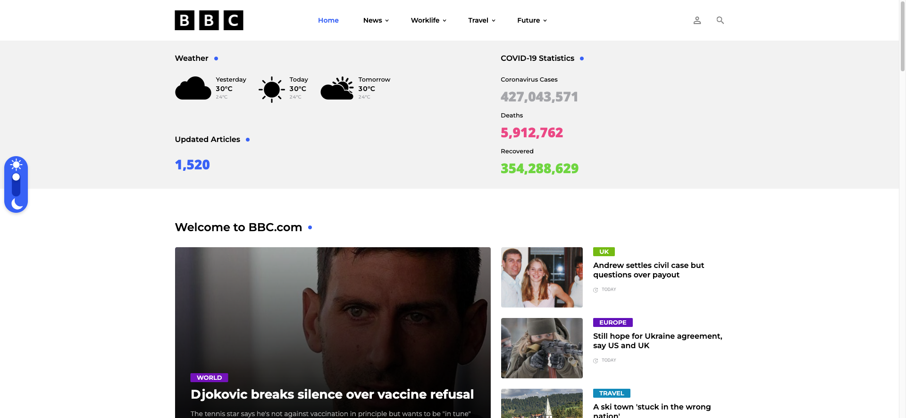

about
저는 개발 직무가 하고 싶었습니다. 어릴적부터 뭔가를 만들고, 누군가 써주는 게 좋았어서 그랬던 것 같기도 합니다. 별 거 아니었지만 학창시절에는 동아리실 게시판에 보기 좋은 폰트로 예쁘게 프린트해서 꽂은 공지를 보고 다른 친구가 보기 편하다라고 말해주는 것도 좋았습니다.
하지만 상상했던 개발과 실제 개발은 조금 달랐습니다. 유튜브나 인터넷강의로 접해본 개발은 까만 화면에 그저 코드를 치고, 결과값을 보는 일 같아 보였습니다. 상상과 다른 내 꿈에 조금 실망하던 차에 저는 퍼블리셔라는 직업을 발견했습니다. 상상한 것을 웹 사이트로 구현하고, 사용자가 사용하기 편하도록 코딩할 수 있는 직업, 저에게는 너무 마음에 드는 직업이었습니다.
동시에 다음 목표도 찾을 수 있었습니다. 퍼블리셔는 그저 상상한 것을 구현하고 사용자의 사용성을 고민한다면, 프론트엔드 개발자는 이와 동시에 백엔드 개발자와 소통하며 데이터를 다루고, 유저가 좀 더 사용하기 편리하도록 웹사이트를 최적화 시키는 직업이라고 들어 저의 최종 목표로 삼을 수 있게 되었습니다. 따라서 저의 현재 목표는 퍼블리셔가 되는 것, 좀 더 나아간 목표는 프론트엔드 개발자가 되는 것입니다.
experience
-
03 — 10 2023
웹 퍼블리셔 · 이너뷰
사원Cafe24 쇼핑몰 솔루션을 기반으로 쇼핑몰들의 신규 구축, 운영 유지보수를 주로 하는 서울 소재 웹 에이전시입니다.
- html5
- css3
- js
- jqeury
- cafe24
- api
projects
-

BBC
제가 배운 디자인, 퍼블리싱 스킬을 최대한으로 보여줄 수 있도록 혼자서 작업한 프로젝트이자 가장 처음으로 작업한 프로젝트입니다. 실제로 상용되는 서비스처럼 보이기 위해서 실제로 백엔드, DB가 작업되진 않았으나 수 백개의 기사 페이지를 직접 수집해 HTML페이지로 퍼블리싱해서 넣었습니다.
인터렉션, 애니메이션 보다는 기본적인 HTML 마크업 구조, CSS 모듈링, JS를 이용한 필요 기능 구현, 플러그인의 사용에 중점을 두며 가장 기본에 충실한 프로젝트입니다. 숫자가 올라가는 제이쿼리 플러그인은 직접 제작해보기도 했습니다.
- html5
- css3
- js
- jqeury
- design
- plugin
- 반응형